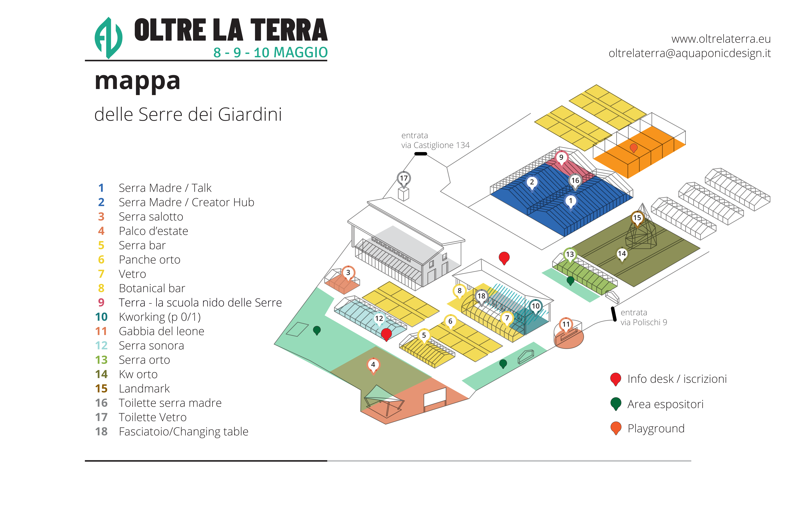

25
Espositori
Aziende agricole, tecnologie e servizi
Agricoltura fuori suolo: tecnologia, territorio, comunità.
Tre giorni a Bologna tra imprese, ricerca, formazione e pubblico per osservare da vicino tecnologie, pratiche e modelli che stanno ridefinendo il settore.
OLTRE LA TERRA è un format ibrido tra fiera e festival dedicato alle colture fuori suolo e alle tecnologie che ne rendono possibile lo sviluppo. Riunisce aziende agricole, imprese innovative, ricercatori, progettisti, formatori e comunità professionali in un contesto pensato per facilitare incontro, confronto e visibilità.
Il programma intreccia area espositiva, talk pubblici, workshop, formazione, demo e contenuti editoriali. L'obiettivo è offrire uno spazio leggibile e accessibile per comprendere meglio le traiettorie del settore, valorizzare le esperienze in corso e creare connessioni tra chi produce, chi innova e chi vuole attivarsi.
Alle Serre dei Giardini di Bologna, dall'8 al 10 maggio 2026, OLTRE LA TERRA mette al centro temi come cibo, acqua, energia, sostenibilità, formazione e impresa, dentro un'esperienza che guarda al futuro ma parte da casi reali.
Partecipa
Apertura del festival con i primi momenti dedicati a formazione, laboratori, networking e musica. Una giornata che introduce il pubblico ai temi di Oltre la Terra e attiva i primi spazi di incontro tra innovazione, comunità e colture fuori suolo.
La giornata più densa del festival: expo, talk, corso di formazione, workshop, Creator Hub e Demo Day. Un programma pensato per intrecciare divulgazione, impresa, contenuti culturali e partecipazione pubblica.
Ultima giornata di Oltre la Terra tra expo, talk, workshop e momenti di chiusura. Un'occasione per approfondire i temi centrali del festival, vivere gli spazi con più calma e concludere il percorso tra confronto, scoperta e networking finale.
Tavole rotonde con istituzioni, imprese, ricerca e territorio sui temi centrali di Oltre la Terra.
18 ore di formazione tra visione, tecnica, progettazione e impresa, con moduli curati da Aquaponic Design e Kilowatt.
Laboratori pratici per adulti, bambini e famiglie per avvicinarsi ai temi del fuori suolo in modo esperienziale.
25 espositori tra aziende agricole, tecnologie, servizi, ricerca e innovazione, con spazi e visibilità uniformi.
Spazio dedicato a creator, interviste, riprese, format editoriali e produzione di contenuti durante il festival.
Sabato pomeriggio: 17 progetti della Masterclass 2025/26 in formato 1:1 su prenotazione.
Dalle 19:00 il festival continua con musica, incontri informali e momenti conviviali.

Accessibilità: la venue è al piano terra. Per informazioni specifiche sull'accessibilità scrivere a oltrelaterra@aquaponicdesign.it.
Apri in Google Maps →Oltre la Terra propone formule di partnership che uniscono presenza pubblica, attivazione territoriale, contenuti e impatto concreto sulle nuove competenze del settore.
Diventare partner di Oltre la Terra significa entrare in un ecosistema che non si esaurisce nei tre giorni di evento. Accanto alla visibilità garantita da sito, social, materiali promozionali, spazi fisici e contenuti editoriali, costruiamo attivazioni ad alto valore aggiunto capaci di prolungare la presenza del partner nel tempo.
Tra queste rientrano il sostegno a borse di studio per giovani partecipanti, il supporto al premio dedicato alla prossima edizione della Masterclass e la possibilità di associare il proprio brand a percorsi formativi, opportunità concrete e storie di crescita che continuano anche dopo il festival.
In questo modo, la partnership non è solo comunicazione: diventa una presa di posizione chiara su innovazione, accesso alla formazione, territorio e futuro dell'agricoltura fuori suolo. Una presenza che inizia con l'evento e continua lungo l'anno successivo, attraverso contenuti, relazioni e iniziative collegate alla Masterclass 2026/27.
Azienda agricola, produttore, fornitore di tecnologie o servizi per le colture fuori suolo. Spazi uniformi, visibilità equa.
Candidati come espositore →Sei un giornalista, blogger o creator nel settore agri/food/tech/sostenibilità? Accreditati e accedi a spazio attrezzato e relatori.
Call per Creator Hub →Programma completo, relatori, workshop: te lo diciamo noi. Nessuno spam.
Sì, l'ingresso a Oltre la Terra è gratuito. Alcune attività del programma potrebbero avere posti limitati o richiedere registrazione, quindi consigliamo di consultare il programma aggiornato e le eventuali indicazioni per workshop, talk o momenti speciali.
Oltre la Terra si svolge a Bologna dall'8 al 10 maggio 2026 presso Le Serre dei Giardini. Gli orari variano in base alle singole giornate e agli spazi attivi. Scarica il programma (PDF).
Puoi candidarti come espositore attraverso il pulsante "Esponi" presente nella landing page. Valutiamo realtà in linea con i temi del festival, tra cui colture fuori suolo, agritech, sostenibilità, energia, ricerca, formazione, food innovation e servizi connessi. Una volta ricevuta la candidatura, ti ricontatteremo con i dettagli.
Il Creator Hub è lo spazio dedicato a creator, divulgatori, videomaker, storyteller e professionisti della comunicazione interessati a raccontare il festival e i suoi protagonisti. È pensato come punto di incontro tra contenuti, networking e produzione mediale durante l'evento. Le modalità di accesso e partecipazione vengono condivise con i soggetti selezionati o accreditati.
Il Demo Day è il momento in cui progetti, idee e percorsi innovativi trovano uno spazio di presentazione pubblica e confronto. È pensato per valorizzare concept, prototipi, startup o progettualità in dialogo con i temi del festival. Il format può includere presentazioni, pitch, restituzioni pubbliche e momenti di incontro con partner, professionisti e pubblico.
Sì. Giornalisti, media, blogger, creator e operatori della comunicazione possono contattarci per richiedere informazioni, materiali stampa o modalità di accredito. Oltre la Terra nasce anche come occasione per raccontare nuove visioni dell'agricoltura, dell'innovazione e del rapporto tra città, cibo e sostenibilità.
Le Serre dei Giardini sono uno spazio aperto e articolato, con aree dedicate a talk, workshop, formazione, espositori e servizi. Stiamo lavorando per rendere l'esperienza il più possibile accessibile e fruibile. Per esigenze specifiche consigliamo di contattarci prima dell'evento, così da poterti fornire indicazioni puntuali sugli accessi e sui servizi disponibili.
Puoi contattarci tramite i riferimenti presenti nella landing page o scriverci attraverso i canali ufficiali del festival. Per richieste relative a esposizione, partnership, programma, press o partecipazione, ti consigliamo di specificare l'oggetto del messaggio così da facilitare la risposta del team.
Aquaponic Design Srl, con sede legale in Italia.
Email: oltrelaterra@aquaponicdesign.it
Raccogliamo i dati personali che ci fornisci volontariamente tramite il form di iscrizione alla newsletter (nome e indirizzo email), al solo scopo di inviarti aggiornamenti sull'evento OLTRE LA TERRA 2026. Non raccogliamo dati di navigazione tramite sistemi di analisi propri.
Il trattamento si basa sul tuo consenso esplicito (art. 6, par. 1, lett. a, GDPR), che puoi revocare in qualsiasi momento inviando una richiesta a oltrelaterra@aquaponicdesign.it.
I tuoi dati sono conservati per il tempo strettamente necessario a gestire la comunicazione sull'evento e fino alla tua eventuale richiesta di cancellazione, o comunque non oltre 12 mesi dalla data dell'evento.
I dati raccolti tramite il form newsletter sono trattati da Mailchimp (The Rocket Science Group LLC, USA), in qualità di responsabile del trattamento, nel rispetto del GDPR e delle clausole contrattuali standard. Non cediamo i tuoi dati a terzi per finalità di marketing.
Mailchimp è basata negli Stati Uniti. Il trasferimento avviene in base alle Clausole Contrattuali Standard approvate dalla Commissione Europea.
Hai diritto di accesso, rettifica, cancellazione, limitazione del trattamento, portabilità e opposizione (artt. 15–22 GDPR). Puoi esercitare i tuoi diritti scrivendo a oltrelaterra@aquaponicdesign.it. Hai inoltre il diritto di proporre reclamo al Garante per la protezione dei dati personali (garanteprivacy.it).
Per informazioni sui cookie utilizzati da questo sito consulta la nostra .